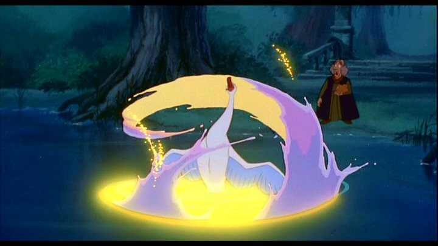

The 1990's really were a renaisannce for 2D theatrical animation. Disney had returned with a string of hits in "The Little Mermaid," "Beauty and the Beast," and "The Lion King." Don Bluth, previously working for Disney, had gone off to run his own studio, and proved that it was possible to sustainably make your own high-quality family films outside the Disney banner. Wanting a piece of the pie, we got films from Warner Bros, Fox, Amblien, and other production companies, most of which millennials remember and grow nostalgic for, even though at the time, they were mostly viewed as "those Disney knock-offs in the bargin bin" (an understandable but unfair thought, given the quality and amount of work involved).1994's "The Swan Princess" was one of those not-Disney Disney movies. I hadn't seen it as a kid, only remembering it because of the direct-to-video sequels it spawned, not unlike "The Land Before Time." that somehow seemed more known than the first, due to daycare centers buying them cheap to add to their VHS collection. Those sequels are worth mentioning, but I'll get to that later. This review is about the first movie, released on a 25th anniversary Bluray about... 25 years later. And that's when I first saw it.Directed by Richard Rich, another Disney-alum who had left to form his own studio (he shared director credits on "The Fox and the Hound" and "The Black Cauldron"), "The Swan Princess" feels like a Disney movie, albiet not a great one. And it's amazing that any studio could have found a known fairy tale that Disney hadn't already taken for their own (whenever you think of "Snow White" or "Cinderella," you probably think exclusively of the Disney versions, as if they originally came up with the stories). Set in a traditional fantasy kingdom, it has the exaggerated character designs and animations you might expect, with bright colors, and plenty of music. The story revolves around Princess Odette and Prince Derek. As children from two different kingdoms, the respective King and Queen of each land see a potential spark when they first meet (each perhaps under five years old), and agree to have them spend their summers together each year, in hopes that they would naturally grow to fall in love, merging the two kingdoms in marriage. In an idea that was novel at the time, and yet today feels extremely dated, Odette and Derek don't like being forced into royal playdates, and grow to loathe spending time with each other each year. Eventually, they both grow into adults, and Derek gasps when he recognizes how beautiful Odette has become, "like an ugly duckling that had turned into a swan." He announces his love and for the planned marriage to proceed, but when Odette asks him to explain why he suddenly fell in love with her, the man can't give any explanation other than her looks. Idiot. From there, Sir Rothbart, a spellcaster banished by Odette's father for threatening to steal the throne, returns and ambushes them on their way back. When Derek arrives, he finds Odette gone, and the King giving him his final words before he dies (... dies!? Seems like a dark turn, and it happens so nonchalantly that even adults would be likely to have missed the gravity of the scene). Assumed to also be dead, Odette is actually held captive by the villain Rothbart, under a spell that keeps her as an animal, a swan, during the day, and only turning back into human form when the reflection of moonlight covers her on the water. Rothbart won't break the spell unless she agrees to marry HIM, making him the legal King. And the only other way to break the spell... for some reason... is for someone to declare undying love for her to the rest of the world. Derek seems like just the hero, but meanwhile, he's focused on finding the mysterious monster that took her in the first place. There's a lot going on in the story, but it's conveyed well enough for children to grasp what's happening. The previous paragraph should make it clear though, that there are some questionble logic choices made to push the story forward in a non-organic way. For the most part, the story feels more casual than a standard Disney movie, and the fantasy-and-magic aspects, or the sense of urgency, don't hold up as well. Instead, the story is really about the core relationship between Odette and Derek, their love for each other, and their flaws and mistakes. ... or rather, Derek's mistakes. And he makes a lot of them. Immature as a child, he seems just as dense as an adult, fully prepared to act the hero with his bravery and archery skills, but with the communication and problem-solving skills of a teenager. His plans to find and save Odette backfire multiple times. Instead, it's Odette in swan-form who has to save herself, with the help of her new friends (a talking frog, a turtle, and a puffin). In fact, if Derek has listened to her and done as she said from the start, the story would have been a lot shorter. And despite it all, the movie still treats Derek as the dashing hero, and Odette the damsel in distress. It's almost a parody of the genre Disney was known for (with several plot points similar to "The Little Mermaid"), taking a modern step forward but inadvertently taking two steps back. I understand that some adults might have grown nostalgic for the movie after seeing it as children, but I can't imagine recommending it today to modern toddlers.  Even so, it's a fun little adventure. Characters are vibrant and charming in a cartoon-y sort of way. There are a TON of musical numbers, each fun to watch (the songs, like many Disney-copy-cats, are less like film songs and more like Broadway showtunes, with realistic-choreography to match it; still fun though). And there's a surprisingly number of clever puns in the dialogue and music if you listen closely. My favorite scenes are the "mission to steal the map" and "princesses-on-parade" bits. Whatever problems I had (and I had several), I smiled and bobbed my head the whole way. The vocal cast is made up of some large names, but their performances aren't successful across the board. Jack Palance plays Rothbart, and comes off menacing, but a bit strange, like they were going for a bushy, evil, rock-and-roller, and not quite getting it. John Cleese plays the talking frog Jean-Bob, but is almost unrecognizable, deminishing what should have been one of the better voices (I had more fun when I remembered it's exactly the French accent he used in "Monty Python's Holy Grail" as the rude French wall-guard). Alternatively, Steven Wright as the turtle,and Steve Vinovich as the puffin, are inspired choices. And Michelle Nicastro and Howard McGillin are perfect as the Princess and Prince, even though they're EXACTLY like every animated Prince and Princess you've heard before (McGillin in particular sounded very familiar, but doesn't seem to have many film credits outside of stage musicals). Animation, which should have been at its best in America's ani-ssance, was also good but mixed. Character designs are highly exaggerated, inspired by characters in "Beauty and the Beast" or "All Dogs Go To Heaven," usually to good effect. Their animations are exaggerated, too much so, fun to watch as a child, but distracting as an adult. There's also some odd pop-in effects due to poor transitions. The backgrounds have some good designs too, but in some instances are inconsistently poor in quality. The one consistent success was in the water animation, especially the effect when Odette transforms on the surface of the lake: to this day, it's one of the best-animated water scenes I've seen. I tend to be generous with American animated films from this era. It was when I grew up, and I feel nostalgic for these movies, even if I had never seen them before. And truly, these movies are far better than most modern films in many ways. I understand the appeal with "The Swan Princess," and would have loved to see what the creative team could make next in this vein, but it's definitely weaker than a lot of other animated films you could be watching.... speaking of the creative team: Richard Rich's independent company, Nest Entertainment (previously Rich Animation Studios) made a bunch of other things, and continues to work today. Most of their work is suspect though, ranging from Christian Bible stories to cheap 3D televison movies. Rich himself fell into a bizarre string of directing choices, being involved himself in the direct-to-video sequels to "The Swan Princess," as well as movies like "Muhammad - The Last Prophet." Most recently, he and the studio have director or production credits on movies like "Alpha and Omega" and "Norm of the North." As for the "Swan" sequels, there were originally three in the series, the third releasing in 1998. Then a fourth movie came out in 2012... as a 3D CGI film. Since then, they've produced 10 total and counting, with a new cheap-looking CGI film every year. And this isn't a case of a company owning the rights and milking the franchise against the creator's will: Richard Rich is the credited director on all of them. Based on his filmography, this feels like a desparate grab to make money and fame on the one film that anyone still recognizes. It's a far fall from working at Disney. Had he returned to 2D and made more original stories, I'd respect the career more, but this is sad to research. The 25th anniversary Bluray contains two making-of feautres, one of which includes the director and cast looking back on "The Swan Princess" decades later in celebration. Based on what I've said here, it's telling that the 25th celebration has the producer boasting about "Swan" being "the most successful independent animated film franchise ever," despite the first movie being a financial bomb at the box office, and being the only theatrical one. It's also candid, but brief, regarding the switch to 3D in the sequels. And the older making-of feature appears largely unedited from its release around when the movie first came out, speaking to American families with Christian values looking for "alternative family entertainment." I didn't expect to go into a fondly-remembered family movie wincing so much researching the rest of the production. Depending on your perpsective, that background might be interesting and elevate the movie in your mind. I shouldn't judge it too harshly, as little of that comes through in the final movie, quality issues aside. "The Swan Princess" is a fine family musical.
- "Ani" More reviews can be found at : https://2danicritic.github.io/ Previous review: review_The_Sky_Crawlers Next review: review_The_Tale_of_Princess_Kaguya